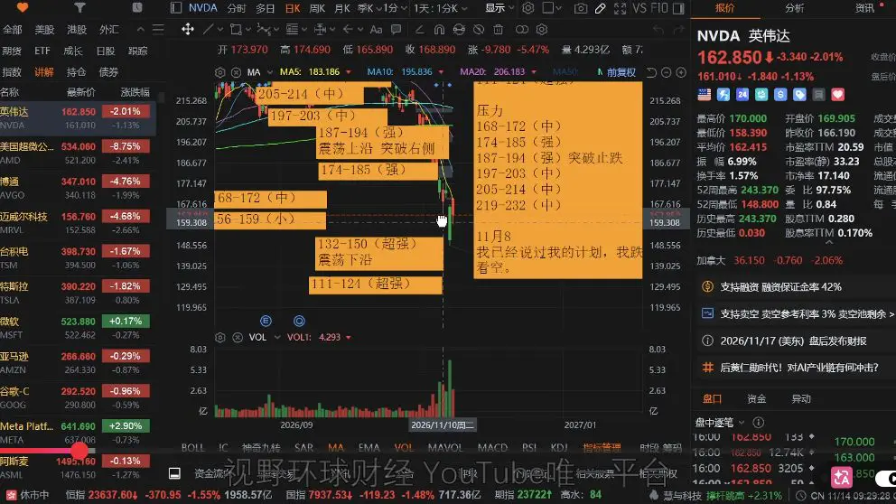
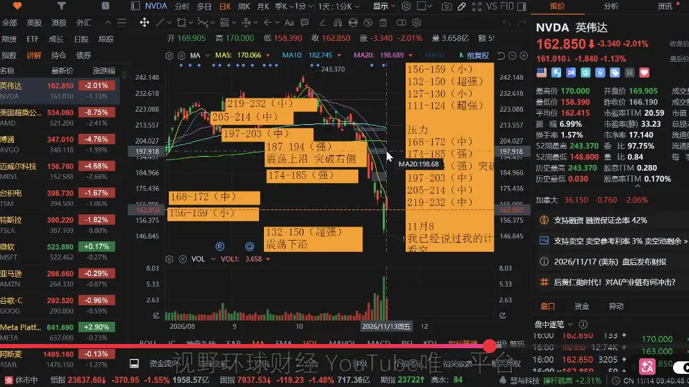
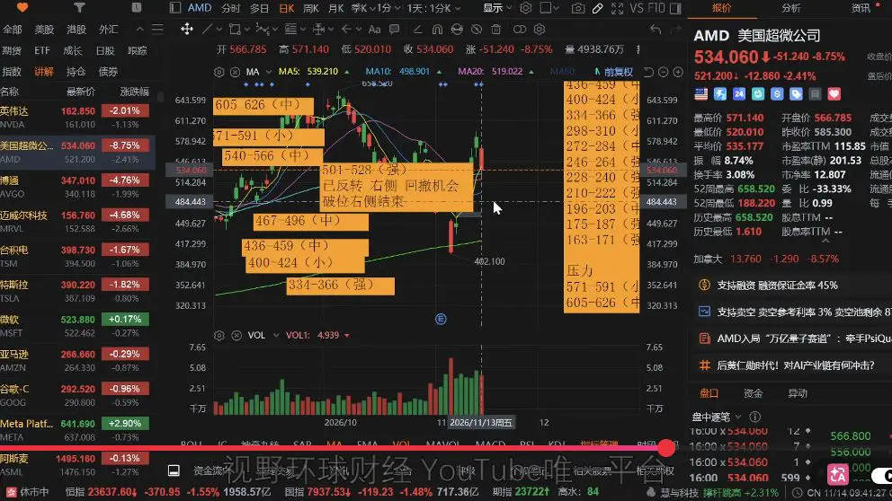
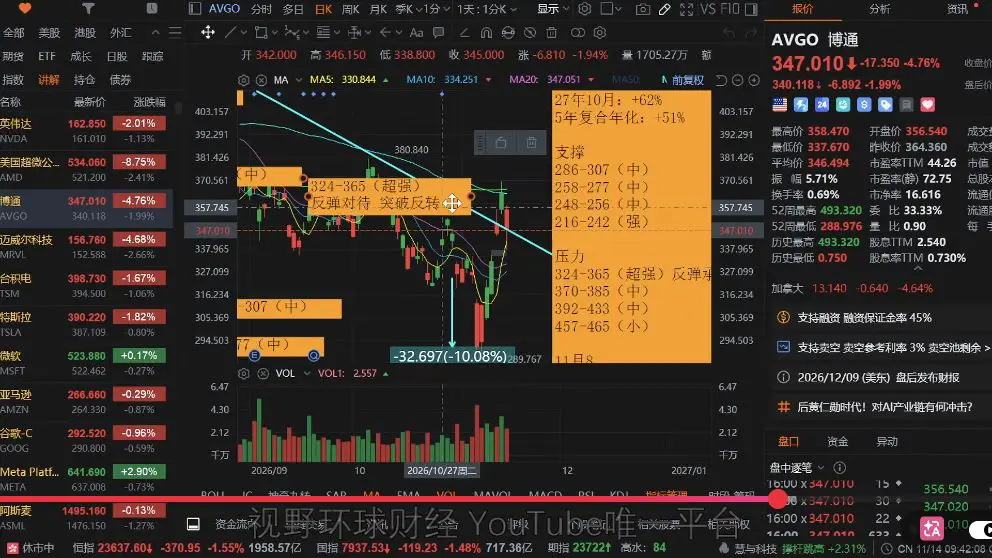
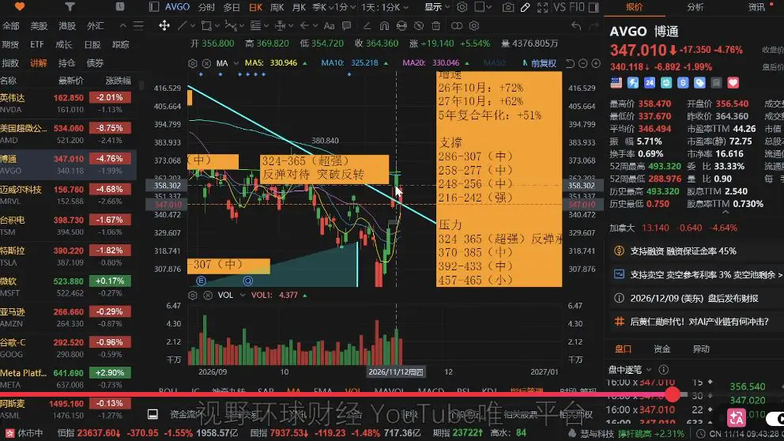
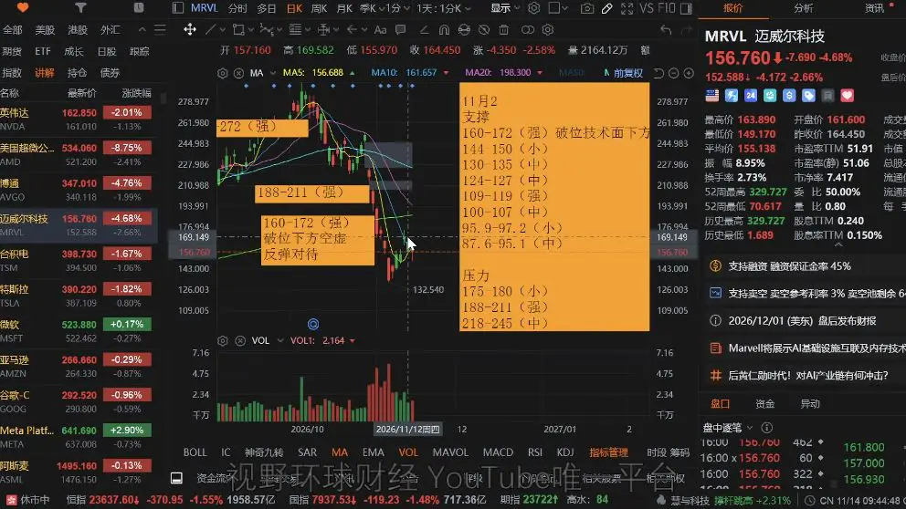
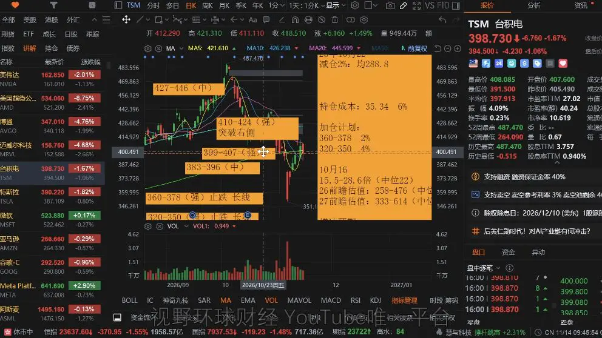

美股 循环信贷、梯云纵裂痕！半导体全军覆没！黄仁勋辞职，有融资机构要跑！ AMD、AVGO、MRVL、TSM！本期重点10 组 · 11 条PPI 与半导体板块回落1思科订单与 AI 投资节奏1循环融资如何传导1股权投资、担保与采购承诺1融资平台与现金流1NVDA 的退出安排1AMD 回测 501 美元1博通的右侧条件1MRVL 与台积电的关键价位2Anthropic IPO 与首日供给1PPI 与半导体板块回落美国 10 月总体 PPI 环比上涨 0.3%、同比上涨 6.5%，均低于节目所列预期。1 条PPI 与半导体板块回落美国 10 月总体 PPI 环比上涨 0.3%、同比上涨 6.5%，均低于节目所列预期。▶回听00:00—02:00对应正文 ↗思科订单与 AI 投资节奏思科全年前瞻上调，同时本季来自超大规模数据中心的 AI 订单变化引发对行业投入节奏的担心。1 条思科订单与 AI 投资节奏思科全年前瞻上调，同时本季来自超大规模数据中心的 AI 订单变化引发对行业投入节奏的担心。▶回听02:00—03:03对应正文 ↗循环融资如何传导芯片供应商可以通过投资、担保或回购云算力，为客户扩容提供资金或信用，客户再用这些资源购买芯片。1 条循环融资如何传导芯片供应商可以通过投资、担保或回购云算力，为客户扩容提供资金或信用，客户再用这些资源购买芯片。▶回听03:03—05:55对应正文 ↗股权投资、担保与采购承诺节目列举约 990 亿美元股权投资、1085 亿美元担保，以及约 560 亿美元的云回购和第三方租赁，作为观察英伟达融资风险敞口的不同口径。1 条股权投资、担保与采购承诺节目列举约 990 亿美元股权投资、1085 亿美元担保，以及约 560 亿美元的云回购和第三方租赁，作为观察英伟达融资风险敞口的不同口径。▶回听05:55—09:50对应正文 ↗融资平台与现金流节目讨论了拟提供 5000 亿美元规模资金的融资平台，并以 500–600 亿美元每季自由现金流测算承担能力。1 条融资平台与现金流节目讨论了拟提供 5000 亿美元规模资金的融资平台，并以 500–600 亿美元每季自由现金流测算承担能力。▶回听09:50—15:36对应正文 ↗NVDA 的退出安排我维持此前的退出纪律。1 条NVDA 的退出安排我维持此前的退出纪律。▶回听15:36—17:07对应正文 ↗AMD 回测 501 美元此前 AMD 向上突破 528 美元，半导体集体下跌后盘后约 521 美元。1 条AMD 回测 501 美元此前 AMD 向上突破 528 美元，半导体集体下跌后盘后约 521 美元。▶回听17:07—17:57对应正文 ↗博通的右侧条件博通曾突破一段短线下降趋势，但前一日收盘约 364.36 美元，离 365 美元仍差一点。1 条博通的右侧条件博通曾突破一段短线下降趋势，但前一日收盘约 364.36 美元，离 365 美元仍差一点。▶回听17:57—20:05对应正文 ↗MRVL 与台积电的关键价位MRVL 跌破 160 美元后曾下探约 132 美元，反弹最高约 174 美元却收在约 168.8 美元，仍未站稳 172 美元。2 条MRVL 与台积电的关键价位MRVL 跌破 160 美元后曾下探约 132 美元，反弹最高约 174 美元却收在约 168.8 美元，仍未站稳 172 美元。▶回听20:05—22:10对应正文 ↗MRVL 与台积电的关键价位台积电下方观察 360–378 美元和 320–350 美元两档区间，要看下探后是否有实际承接。▶回听20:05—22:10对应正文 ↗Anthropic IPO 与首日供给按节目引用的招股修订文件和公开消息，当时估计发行对应市值约 1.4 万亿美元，合计公开募资、私募配售和可能的超额配售约 1000 亿美元。1 条Anthropic IPO 与首日供给按节目引用的招股修订文件和公开消息，当时估计发行对应市值约 1.4 万亿美元，合计公开募资、私募配售和可能的超额配售约 1000 亿美元。▶回听22:10—24:10对应正文 ↗这期涉及哪些股票与内容？NVDA主讲芯片供应商可以通过投资、担保或回购云算力，为客户扩容提供资金或信用，客户再用这些资源购买芯片。AMD主讲此前 AMD 向上突破 528 美元，半导体集体下跌后盘后约 521 美元。AVGO主讲博通曾突破一段短线下降趋势，但前一日收盘约 364.36 美元，离 365 美元仍差一点。MRVL主讲MRVL 跌破 160 美元后曾下探约 132 美元，反弹最高约 174 美元却收在约 168.8 美元，仍未站稳 172 美元。TSM主讲MRVL 跌破 160 美元后曾下探约 132 美元，反弹最高约 174 美元却收在约 168.8 美元，仍未站稳 172 美元。背景提及：无。市场指标：无。背景提及不代表对该股票展开分析。CHAPTER 01 · 回听 00:00PPI 与半导体板块回落美国 10 月总体 PPI 环比上涨 0.3%、同比上涨 6.5%，均低于节目所列预期。核心 PPI 环比 0.3%、同比 5%。纳指与半导体测试压力后回落，费半 30 只成分股全部下跌，道指相对坚挺。CHAPTER 02 · 回听 02:00思科订单与 AI 投资节奏思科全年前瞻上调，同时本季来自超大规模数据中心的 AI 订单变化引发对行业投入节奏的担心。观察半导体时，要把卖方预期、客户实际签单和资金能否到位分开核对。CHAPTER 03 · 回听 03:03循环融资如何传导芯片供应商可以通过投资、担保或回购云算力，为客户扩容提供资金或信用，客户再用这些资源购买芯片。需求、回款和信用风险因此相互牵连。我用 2000 年前后的思科作类比，关注信用收缩后订单能否继续兑现。放大查看 ↗NVDA 原图 · 循环融资如何传导原视频 05:30回听此处CHAPTER 04 · 回听 05:55股权投资、担保与采购承诺节目列举约 990 亿美元股权投资、1085 亿美元担保，以及约 560 亿美元的云回购和第三方租赁，作为观察英伟达融资风险敞口的不同口径。这些承诺的性质、期限和触发条件各不相同，不能机械合并当作已发生债务。CHAPTER 05 · 回听 09:50融资平台与现金流节目讨论了拟提供 5000 亿美元规模资金的融资平台，并以 500–600 亿美元每季自由现金流测算承担能力。现金流可以提供缓冲，参与机构是否继续提供资金、客户是否有能力履约，仍会改变融资成本和订单节奏。CHAPTER 06 · 回听 15:36NVDA 的退出安排我维持此前的退出纪律。当天最高约 170 美元，没有到 172–174 美元区间。若财报之前依然没触及该区间，原计划仍是等 17 日财报以后，在 18 日执行。放大查看 ↗NVDA 原图 · NVDA 的退出安排原视频 16:49回听此处CHAPTER 07 · 回听 17:07AMD 回测 501 美元此前 AMD 向上突破 528 美元，半导体集体下跌后盘后约 521 美元。我看 501 美元是否失守，股价下到突破区内时，仍要看后续能否守住区间下沿。放大查看 ↗AMD 原图 · AMD 回测 501 美元原视频 17:29回听此处CHAPTER 08 · 回听 17:57博通的右侧条件博通曾突破一段短线下降趋势，但前一日收盘约 364.36 美元，离 365 美元仍差一点。以开盘或收盘站上 365 美元作为转向右侧的确认条件，盘中短暂触及不足以确认。放大查看 ↗AVGO 原图 · 博通的右侧条件原视频 18:09回听此处放大查看 ↗AVGO 原图 · 博通的右侧条件原视频 19:30回听此处CHAPTER 09 · 回听 20:05MRVL 与台积电的关键价位MRVL 跌破 160 美元后曾下探约 132 美元，反弹最高约 174 美元却收在约 168.8 美元，仍未站稳 172 美元。台积电下方观察 360–378 美元和 320–350 美元两档区间，要看下探后是否有实际承接。放大查看 ↗MRVL 原图 · MRVL 与台积电的关键价位原视频 20:49回听此处放大查看 ↗TSM 原图 · MRVL 与台积电的关键价位原视频 21:55回听此处CHAPTER 10 · 回听 22:10Anthropic IPO 与首日供给按节目引用的招股修订文件和公开消息，当时估计发行对应市值约 1.4 万亿美元，合计公开募资、私募配售和可能的超额配售约 1000 亿美元。首日实际可交易的流通股又是另一项变量，需要看发行和解禁安排。SOURCE MATERIAL完整转录与回听原视频：美股 循环信贷、梯云纵裂痕！半导体全军覆没！黄仁勋辞职，有融资机构要跑！ AMD、AVGO、MRVL、TSM！机器原稿可能含同音字与数字单位错误，保留用于对照。播放00:0025:581×1.25×1.5×2×静音展开完整转录下载 TXT ↗下载 SRT ↗查找转录内容00:00大家好,欢迎回到视野环球财经,我是Ryno。现在是美东时间,26年11月13号,周五晚上的8点25分。00:09今天是道指独掌,纳指领电。像什么纳指还有费城半导体,是在触碰到关键的压力位置的时候,像摸了高压电门,急速的跳水。00:22那么标普呢,也是在CTA准备临门一脚追涨的时候,没想到呢,他是掏出了枪。00:32咱们今天呢,先说一下数据啊,然后再分析一件和人工智能发展很重要的新的线索,就是循环信贷融资出现了裂痕。00:44另外呢,今天节目还会跟踪一下大家平常啊,今天包括波动比较大的几只个股啊,在咱们的标题上。00:53好,首先我们看一下今天的一组这个生产者物价指数。01:00美国的10月的PPI的情况呢,是整体上涨了,月率是环比0.3,低于9月的1.4%,也低于预期的0.4。01:12同比的涨幅呢,是从6.3%升到了6.5%,但是低于预期的6.6%。01:21核心的PPI呢,是环比上涨了0.3%,与预期相符,低于前值的0.8%,同比涨幅维持在5%不变。01:31现在的市场呢,开始计价,从12月份开始,美联储会连续的加息三次。01:38这个加息预期还是比较满的。01:43好,这个呢,就是目前整个的在利率市场的一个情况啊。01:48因为这个利率的情况,美联储加息会直接关系到,其实整个市场融资成本的变化啊。01:57这点请大家一定注意。02:00好,讲完这个,咱们直接就讲一讲今天的一个重要的新线索。02:07那么今天呢,是科技股和人工智能持续的抛售啊。02:13我们看,费城半导体指数呢,是30只成分股全部下跌。02:18为什么昨天还反弹得好好的,今天突然间掉头向下,发生了两件事情。02:26第一个,是来自于斯科的财报。02:30财报显示呢,尽管全年前瞻上调,但是本季度来自超大规模数据中心的人工智能订单,02:39环比上个季度增长放缓。02:42这个就掩盖了强劲的业绩和预期。02:45当然公司也给出了解释啊,说把这个归咎于季节性,不是趋势性的走落。02:52但是市场仍旧担心啊,只要你有AI增速放缓这几个字,02:58那么这就不是什么好事嘛,对吧?03:01好,这个问题呢,还算是一个小问题。03:05今天有一个很大的问题。03:09仍旧围绕着英伟达展开。03:14随着黄仑勋的离开呢,机构投资者啊,03:18特别是贷款方的机构投资者,信心正在动摇,03:24有机构准备跑路了。03:27这个地方呢,我就要从持续了好几年的循环信贷融资这件事情说起。03:34什么意思呢?我们把这个概念简单的讲一下啊。03:37就是英伟达出钱或者出担保给他自己的客户。03:43同时呢,获取客户的股权或者收入的分成。03:48那么客户呢,用英伟达直接提供的现金或者是英伟达担保的这个融资去购买英伟达的GPU。03:59那就会推动这个业务的发展嘛,形成一个循环。04:03这个呢,大家也叫左脚踩右脚,对吧?04:06也叫踢云纵。04:08这个战略主导者其实正是刚刚辞职的黄仁勋。04:14也正是这个战略把英伟达在前段时间推到了全球市值第一的宝座。04:21当然现在随着英伟达连续的下跌,市值呢被苹果超越。04:27现如今,这个战略的坚定的执行者离开了。04:32那么问题就来了,新的继任者还会继承这一战略吗?04:38今天纽约时报呢,是援引消息人士报道说,黄仁勋在离职后,04:44英伟达的贷款方的财团正处于变动之中,04:50目前还没有完成任何的贷款,04:53而且至少有一家之前同意提供融资的六家贷方之一,05:00在周四讨论要退出,它要跑路了。05:05这个对于AI行业来讲绝对是个沉重的打击。05:09为什么呢?05:10这个就不得不让我想起来啊,2000年的思科。05:14当时就是思科主导的循环信贷融资泡沫破灭,05:21后来加速了2000年的互联网泡沫。05:23这个故事我们在以前的节目里跟大家讲过啊。05:27在过去的两三年的时间里边,05:29人工智能行业除了依赖超大规模数据中心,05:33就是四大科技的大幅的支出,05:36还有一个最终的贷款人,05:39就是出售GPU的英伟达。05:43那么现在呢,05:44这家贷款机构刚刚失去了CEO。05:47哎呀,05:48而且呢,05:48前几天我们节目里还在讲过,05:50其实在黄仁勋辞职后的几个小时,05:5214家卖方机构就开始下调评级和目标价。05:58那么背后的循环信贷的情况到底怎么样啊?06:02由于今天呢是一个周五,06:04我想借这个时间给大家来稍微的盘一盘,06:07让大家做到心中有数。06:10我还是对着数据来跟大家讲。06:15咱们来看看英伟达的循环信贷融资的规模。06:21英伟达呢在七月底曾经有披露啊,06:24目前他们共拥有990亿美元的股权投资,06:291085亿美元的担保,06:31以及560亿美元的AI的云回购和第三方租赁。06:36人工智能的建设呢,06:38非常依赖于债务和循环融资。06:40我随便说几个他已经投资的股权啊。06:44比方说,英伟达一月份的时候向COEV投资20亿美元,06:49三月份向NBIS的预付认购股权投资20亿,06:54五月份有权购买至多21亿美元的IREM的股票。06:59那么这个月呢准备向Nscale发行10亿美元的票据,07:04那这个是真的是好死不死。07:06这个Nscale呢在周四刚刚更新了上市的,07:10不是要上市嘛,07:11更新了这个S1的这个修改文件,07:14这个文件更新完了以后,07:17简直是天空就像泼了一瓢粪下来啊。07:21利息支出呢吞噬了68%的收入,07:25而且还没有获得具有约束力的融资承诺。07:29也就是说他现在很缺钱,07:31那现在呢那要卖这个算力出去,07:34他东西还没建起来,07:36又没人愿意去投资,07:38这个大楼的框架在那摆着,07:39对吧,07:40眼睁睁地看着,07:41当不了房东,07:42你说恶心不恶心。07:44好,07:45这个是一个啊,07:47然后你看看这张图就知道啊,07:49这是目前整个的英伟达,07:52在他的包括这个现金投资股权等等啊,07:57和供应商一起的一些关系,07:59非常的多,08:00由英伟达在中间牵线搭桥,08:03而且这个现金达桥很多都是由黄仁勋来主导啊,08:07至少这个战略是他来确定的。08:11好,08:11这是一方面,08:13大家说看上去还行啊,08:14似乎呢也没有太多的钱,08:16对吧,08:17好,08:17那这个是已经付出去的账单啊,08:20还有没付着呢,08:23还有欠条,08:25还欠了5300亿美元,08:29指的是英伟达啊,08:31股权投资呢是最容易算的部分,08:33其他的风险敞口是什么,08:35其他的风险敞口在7月份披露的当时的季度财报,08:40给出了明确的标注,08:45未来承诺的总额达到了3660亿美元,08:49其中供应和容量采购额度达到2790亿,08:54比三个月前的1190亿大幅增长,08:57此外还有290亿的云服务协议,09:00250亿的数据中心租赁,09:03250亿的已承诺当时尚未注册的股权投资和80亿美元的资本支出,09:11560亿美元的额外承诺,09:14其中360亿美元的协议,09:16用于认购AI的云回购的这个容量,09:20还有200亿数据中心的租赁,09:23这个全部都是由英伟达签署,09:25然后转给了他的新云数据中心的合作伙伴,09:30相当于提供了担保,09:33还有1085亿美元的担保,09:37俄亥俄州为OpenAI提供了1050亿美元的担保,09:42以及为AI的云合作伙伴租赁提供的35亿美元的土地、电力和外壳担保,09:51所以你通过这张图,09:55你也能发现它目前的情况是总计已经达到了5305亿美元的欠条,10:04这个欠条不包括刚才上面讲到了990亿美元的股权融资,10:09还有最重要的一项就是今天说出现的裂痕的这一项,10:14有机会要跑路的这一项,10:167月份的时候他不是签署了一个交易吗?10:19就是当时黄仁勋承诺英伟达可以为他在8月份当时和6家机构签订的一个协议,10:28就是阿波罗、贝莱德、黑石、布鲁克菲尔德、高盛和KKR,10:34一共要推出一个5000亿美元的融资平台,10:38由这6家贷方提供5000亿的资金,10:42那么英伟达呢把25%就是1250亿美元承担到自己手里边,10:49说可以提供担保,10:51那么周四其实就是这6家之一有人要退出,10:57不清楚是谁啊,10:58目前呢并不知道是谁要退,11:01但是真的一个退了,11:02其他的玩不玩啊,11:03其他的五个还敢不敢玩啊,11:06这个不就是问题所在吗,11:08其实按照道理来讲啊,11:09英伟达呢每个季度的自由现金流差不多是500亿到600亿,11:15那一年算下来的话就是2000亿到2400亿,11:19其实他只要GPU持续热销,11:22他完全可以附带得起这5000亿嘛,11:25对吧,11:25因为你这两年时间就可以自由现金流,11:28完全可以覆盖,11:29再加上6家机构提供的5000亿,11:32这个是1万亿美元打底,11:35这是什么,11:36这就是整个AI信贷循环的关键的基础设施,11:41这个1万亿美元增强了大家的信心,11:45再加上四大科技那边还有支出,11:47对不对,11:49好,11:50那你现在的情况变成什么了,11:52变成后任CEO,11:55我们不管是现在的CFO,11:57还是现在大家正在物色的其他的顶替的CEO,12:01会不会继续这个链条呢,12:04还是会选择主动收缩呢,12:07因为这里边有一个这个博弈啊,12:10就是如果你继续这个链条,12:13英伟达自己肯定要承担很大的,12:15风险,12:15对吧,12:16你不然的话,12:16他的CDS跑到70多怎么跑的呢,12:19和之前相比,12:20开始还有最早的时候,12:21还有超过100的时候啊,12:22那他怎么来的呢,12:23就是因为提供了太多的担保,12:25然后承担了太多的资金嘛,12:28那么如果选择继续往下走,12:30那他自身肯定也会承担一定的风险,12:33那么如果不往下走,12:35那相当于什么,12:36相当于现在新的CEO,12:38如果主动切断循环融资或者封顶,12:42那么最先倒大煤的,12:44依旧是那些缺钱的合作伙伴,12:48那些新云数据中心公司,12:51当然其他的朋友呢,12:52你持有别的半导体的,12:54大家也不能太开心,12:55为什么呢,12:56因为整个的AI行业,12:58如果循环信贷融资封顶了,13:01切断了,13:04整个行业都是利空,13:06全是利空,13:07因为AI的硬件产业半导体这个圈,13:12这个里边,13:13你只要在这个圈里边,13:14你就逃不掉的,13:16你的钱都是客户,13:18客户的钱找别人借的,13:19别人又买他的,13:20来来回回就是在里边赚嘛,13:22对吧,13:22所以今天的半导体的大跌,13:26除了技术面,13:26我们说反弹到压力之外,13:28很难过得去,13:29目前对吧,13:29他吃了一次,13:30发现电门的电量有点高,13:33退回来了,13:35可以理解,13:36还有一个就是今天,13:37你看这个新闻报道发的时机,13:40他直接就发出来了,13:42英伟达的担保融资平台这5000亿,13:44六分之一的机构准备退出,13:47这个也是重要的杂盘的推动力之一,13:51所以为什么大家看到说,13:53之前表现良好的像是AMD,13:55博通今天也大幅回吐,13:57不是说英伟达他要是不好了,13:59肉就涨到他们身上了吗,14:01那前提是这个市场里边,14:02还有肉啊,14:04他这个肉盘子再足够做大呀,14:06如果这个盘子再萎缩,14:08你觉得会发生什么,14:10好,14:11那么回过头来,14:13我们再来说一下英伟达的新的CEO啊,14:17关于新的CEO的这个人选问题呢,14:21那市场猜测很多,14:22对吧,14:23博彩市场也在大力的压注,14:25金融时报的报道是说呢,14:27英伟达董事会曾经接触过AMD的首席执行官,14:31把他作为潜在的继任者,14:34那么据CNBC的记者报道呢,14:36呃,14:37董事会告诉CNBC说,14:40他们还没有正式接触任何潜在的候选人,14:44任何的猜测都为时尚早,14:47那么我现在说一句啊,14:48就是,14:49其实今天网上呢,14:50有不少的讨论,14:52说英伟达的内部员工,14:54在提交讨论,14:56提交信息,14:57希望黄仁勋回归,14:59网上也出现了大量,15:01让黄仁勋回归的请愿的名单,15:05那么我个人的判断是,15:07完全是个人判断啊,15:09短期回来比较的难,15:12因为他还要应付接踵而至的国会调查,15:16最早的应该是在18号吧,15:18就是在他财报后的第二天,15:22这是最早的啊,15:23后面还有没有更多,15:25咱们不知道,15:25但是呢,15:26来自于国会的压力会接踵而至,15:30好,15:31那讲一下关于英伟达的计划的情况啊,15:34目前的清仓计划没有改变啊,15:38大家不要说,15:39是不是他会回来你会改变,15:41目前我没有任何的计划改变,15:44我仍旧会在,15:46要么就是在财报之前,15:48价格首先达到172到174这个区间,15:53我会把剩余的仓位清仓离场,15:57今天最高价其实呢,15:59盘中的时候曾经包括到过170块啊,16:03因为最高的时候差不多170整嘛,16:07然后就上不去了,16:08没有到那两块钱的位置啊,16:11所以呢,16:12看来有的朋友卖的比我要早两块,16:14对吧,16:15没关系,16:16后面呢,16:16我也讲过,16:17如果他到不了这个区间,16:19我就等他一个财报,16:21我就再陪他再走几天,16:24财报之后17号,16:25那么我清仓会在财报后的第一个交易日,16:2918号去完成,16:31好吧,16:31这个计划没有任何改变啊,16:34除非周末的时候又宣布,16:37就黄仓勋又回来了,16:38那个可能就需要变了啊,16:40今天给大家讲一下,16:41但我认为那是一个极小概率的事件,16:43比方周末,16:43他突然宣布说,16:44现在呢,16:45我们就重新聘用黄仁勋了,16:47对吧,16:48他现在呢,16:48换了个名字,16:49对吧,16:50我们重新聘用了这个Jason,16:52没有聘用黄仁勋,16:53对不对,16:54名字一改就好了嘛,16:55好,16:56开个玩笑啊,16:56这个我认为概率是比较低的,16:59好,17:00那其他的呢,17:02咱们就讲一讲其他的个股吧,17:07AMD,17:08讲过原因了啊,17:10今天半导体全部大幅下挫,17:12AMD呢,17:13他在突破528之后,17:15进入了技术性的反转右侧,17:18那么这个回撤,17:20目前是技术面的上车的机会,17:24好吧,17:24技术面的上车机会啊,17:25旁后跌到521,17:27在没有跌破501之前,17:30是技术面的一个波段的博弈机会,17:33因为往下止损比较小,17:36那么往上上看前高的这个幅度比较大,17:40所以是一个技术面的博弈,17:42破位当然是什么意思呢,17:43那就右侧结束了嘛,17:44他这个机会就没有发生了,17:47我们这里呢,17:47只能判断大概率的事情啊,17:49包括通过盈亏比,17:50你去做这个波段,17:51你觉得自己合适还是不合适,17:55好,17:55这个是AMD的情况,17:57博通和他比起来呢,17:59就稍微的差那么一点点,18:03博通呢,18:04之前是突破了小的下降趋势线的这个小结构,18:08动能显著增强,18:09但是咱们之前刚刚给过位置,18:12365块钱以开盘价或者收盘价为准,18:17盘中不能算啊,18:18盘中不能算啊,18:19他如果能站上365会进入右侧,18:23会不叫右侧,18:24会进入反转啊,18:25会完全把这本的下跌,18:27全部给,18:28就是结束掉,18:29然后呢进入反转啊,18:31那个时候呢技术面就走好了,18:32那么追涨的资金也会更多的进来,18:35那么被动资金,18:36量化资金也会被动的啊,18:38也会更多的往里面去推一些啊,18:40对他的整个的恢复会更好,18:43所以365,18:44那么在昨天的时候呢,18:46昨天的收盘是正好是收到了364块3毛6,18:50啊,18:51有会员朋友问我这个算不算啊,18:53我经常会说一句话,18:54差一毛钱,18:56一分钱都不算啊,18:58这个为什么,18:59我在会员节目里边也讲过,19:01关于开盘价和收盘价啊,19:04对于机构来讲的一个影响,19:06实际上呢,19:07大家可能,19:08我觉得应该大部分的朋友都不知道啊,19:10美股也是有净价的啊,19:14开盘净价,19:15它不仅有开盘净价,19:17它还有收盘净价机构的,19:19那个决定了开盘位置和收盘位置,19:23所以有的时候大家会看到,19:25价格在通常在开盘前的,19:27快要开盘前的那几秒钟或者几分钟,19:31变化很快,19:32包括在收盘前的也是这样,19:34它最后的那个价格,19:36才是决定开盘价和收盘价的位置,19:39那那个价格又影响到了机构程序化的一些操作,19:43有兴趣的可以去会议节目里面看一看啊,19:45为什么要以开盘价和收盘价为准,19:48好,19:50这个是博通的情况,19:51那么现在的情况呢,19:53就是小趋势上还可以,19:55还没有说走得非常的差,19:57但是呢,19:58你要真的又再往下掉,20:00对吧,20:01比如说又一个跳空下去,20:02把这个缺口直接跳过去了,20:05那就又变成了一个导形反转,20:08期待下个星期不要发生这种事情啊,20:10比方说你要下个星期看到它,20:12一口气跳到了335以下,20:15那这就是一个导形反转,20:17是一个走空,20:18是一个全面的走空反转趋势,20:21那下个星期再看啊,20:22现在这个收盘了吧,20:23这个后面的东西看不到,20:26也没什么意义啊,20:26临近下个星期开盘时候,20:28大家自己关注,20:30好,20:30然后呢,20:31Marvel,20:34Marvel在跌破了160块钱之后,20:36下方我们讲过,20:38非常的空虚,20:40非常的空虚,20:41最多呢,20:42跌破160之后,20:42已经是下探到了132,20:44那么它的情况,20:46也并没有好太多,20:47它连172块钱都没有站上,20:50上方连续两个强压力,20:52所以技术面非常的难,20:54明显的只能看个反弹,20:56只能看个反弹,20:57好吧,20:58因为这一轮反弹的已经不少了,21:00最高去到了174的高点啊,21:03高点去到了174块钱,21:05当天收到了168块8,21:08很可惜,21:08172没站上,21:10好,21:11台积电,21:13台积电,21:14我的加仓计划仍旧还在啊,21:17加仓计划,21:18360到378和320到350块,21:23这两个地方有比较不错的买盘支撑或者直接形态,21:27我都会去把仓位加起来,21:30那么它加完之后预计会变成我的第二大持仓,21:34如果全部都能买得到的话,21:35当时不清楚下方这个地方会不会让我买得到这个低位的320到350,21:40但我觉得360到378的概率是比较高的,21:43好,21:43那什么时候它看不到下方买不到这种低位了呢,21:47突破424块钱,21:49这个低点消失了,21:51不会该看到了,21:52暂时不会再看到这个低点,21:54所以呢,21:55它还差那么一点点啊,21:57今天又破了399,21:58又支撑变压力了,22:00所以上方又变成了两个压力,22:01所以变成了一个明显的又要向下承压的趋势,22:05意味着呢,22:05我还是能有机会买得到的,22:08好,22:08其他的呢,22:09今天就不多说了吧,22:11好吧,22:12别的东西呢,22:14就是再给大家预告一个东西吧,22:17好吧,22:18预告一个什么东西呢,22:20这个是之前的那个啥,22:22我们预告一下关于周末吧,22:24下个星期呢,22:27由于有一件大事啊,22:29就是这个Answerpick的这个IPO,22:32这个IPO呢,22:33它预计的按照目前的公开市场信息,22:36和它提高的提交的S1A的这个修正文件呢,22:40预计应该会到1.4万亿左右啊,22:43市值到1.4万亿,22:45那么所有的融资规模,22:47算上公开市场的这个这个募资IPO,22:51加上私人配售,22:53加上这个绿鞋机制的这个下行这个叫做机构的超额配售,23:00这几个加起来的话,23:01差不多在1000亿左右,23:03但是呢,23:03它在上市的首日的第一天,23:07和SpaceX的情况又有点不同,23:09它的第一天的流通股的量,23:12就是可出售股票的量,23:15要明显大于SpaceX,23:18而且其中还藏了一个后门,23:21就是它的几位创始人,23:24还可以在第一天就可以卖不少的股票,23:29这个呢,23:30确实是有一点,23:32我个人觉得不太厚道啊,23:33我个人觉得是个不太厚道的事情,23:35那创始人第一天,23:36他本身,23:38他就已经有安排股票可以出售了,23:40对吧,23:41一共是出售,23:42七位这个已经是在原计划里面就有很多,23:46然后又安排了一个额外的,23:47可以有百分之,23:49接近他们持仓的一个百分之十的,23:51一个额度可以出来,23:53那如果第一天他们就卖了,23:55那直接人家就套现不少钱了,23:58就套现几十亿就走人了,24:00对吧,24:01那后面,24:02反正这东西怎么说呢,24:03看你怎么想,24:05当然这个anser pick,24:07他们是在降了估值之后的,24:09对吧,24:09之前最早的时候,24:10最高曾经到两万亿左右,24:12现在呢,24:13是预期在一万到一万四千亿,24:16一点四万亿啊,24:17一万到一点四万亿这个区间,24:20那这个区间其实,24:22降完之后,24:23钱力大不大,24:24那散户去参加,24:25大家有没有便宜可占,24:27那么你就要了解,24:28基本面估值,24:30投资机会,24:30风险,24:31达到什么样的条件,24:32算便宜,24:33什么条件没达到,24:34算很贵,24:35这个因为,24:36它是根据它后面的,24:37有一些财务的更新信息,24:40你需要去做抉择的啊,24:42好,24:42那么在这个星期呢,24:44就讲讲关于这个IPO的细节,24:46那么对于公共频道的朋友呢,24:48因为这个节目是单独做一期啊,24:50非常的长,24:51所以我没有,24:51没有办法呢,24:53把它全部,24:54跟大家在公共视频里讲,24:56那么下个星期呢,24:57在上市之前,24:57我会简单的,24:58把它的一些概述的情况,24:59给大家讲一讲,25:00好吧,25:01这个也帮助大家去理解它,25:03包括,25:03它的这个禁售股的捷径情况,25:06非常的复杂,25:07非常非常的复杂,25:08分为几十个节点释放,25:10看得人是头晕眼花,25:13反正是花样叠出啊,25:15他们这个IPO真的是,25:17好,25:17然后呢,25:18到了周末的时候,25:19周日仍旧会去更新,25:20专门答疑的社区帖子,25:21如果你加入了这个级别,25:22那么你可以在首页的这个频道首页,25:25社区下面,25:26找一个带有QA图片,25:28和日期的帖子,25:29有问题呢,25:30就在当中那个日期下面留言,25:32那个评论区留言,25:33有空呢,25:33我就会抽空回答大家,25:35这个周末的时候,25:37我会羁押一些,25:38非常感谢大家,25:40好,25:40那这个呢,25:41就是咱们今天节目的全部内容,25:43如果你觉得我今天,25:45给大家讲的内容对你有所启发,25:48还是希望大家能够看完之后,25:49多多帮忙,25:50点赞,25:51评论,25:51转发,25:52好,25:52感谢大家,25:53祝大家周末快乐,25:54咱们下个星期的同一时间,25:56不见,25:57不散。没有找到匹配内容。本期已读到这里返回视频库 ↗